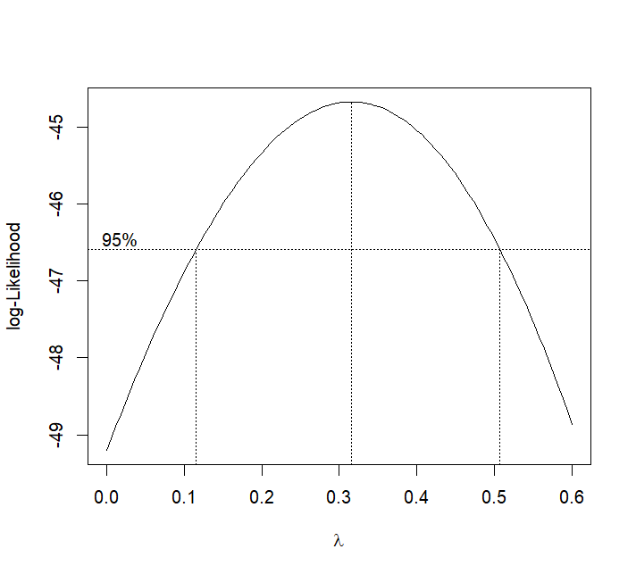
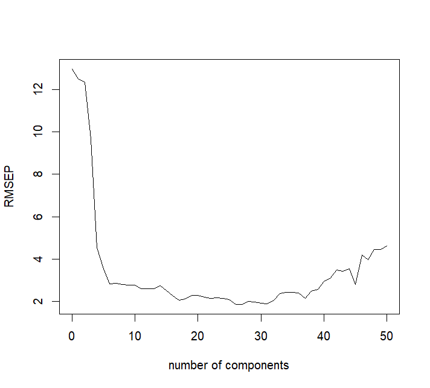

这一讲为实践内容，是对回归分析第6讲的延伸，我们将学习如何使用R语言对欠佳的线性回归模型进行优化。
本讲默认读者已经了解R语言的基本语法，能够在自己的电脑中成功编写和运行R脚本。
一、残差问题优化
1.1 残差不独立的情形
残差不独立，也就是说模型的协方差阵不满足GM条件。我们假设C o v ( e ) = σ 2 Σ Cov(e)=\sigma^2\Sigma C o v ( e ) = σ 2 Σ
β ^ = ( X T Σ − 1 X ) − X T Σ − 1 Y v a r ( β ^ ) = σ 2 ( X T Σ − 1 X ) − \begin{aligned}
\hat\beta&=(X^T\Sigma^{-1}X)^-X^T\Sigma^{-1}Y\\
var(\hat\beta)&=\sigma^2(X^T\Sigma^{-1}X)^-
\end{aligned}
β ^ v a r ( β ^ ) = ( X T Σ − 1 X ) − X T Σ − 1 Y = σ 2 ( X T Σ − 1 X ) −
举一个实际例子。我们导入faraway包中的globwarm数据集，使用线性回归模型进行拟合：
> data( globwarm, package= "faraway" ) > lmod <- lm( nhtemp ~ wusa + jasper + westgreen + chesapeake + tornetrask + urals + mongolia + tasman, globwarm) > summary( lmod) ( 此处省略部分行) Coefficients: Estimate Std. Error t value Pr( > | t| ) ( Intercept) - 0.242555 0.027011 - 8.980 1.97e-15 * * * wusa 0.077384 0.042927 1.803 0.073647 . jasper - 0.228795 0.078107 - 2.929 0.003986 * * westgreen 0.009584 0.041840 0.229 0.819168 chesapeake - 0.032112 0.034052 - 0.943 0.347346 tornetrask 0.092668 0.045053 2.057 0.041611 * urals 0.185369 0.091428 2.027 0.044567 * mongolia 0.041973 0.045794 0.917 0.360996 tasman 0.115453 0.030111 3.834 0.000192 * * * - - - Signif. codes: 0 ‘* * * ’ 0.001 ‘* * ’ 0.01 ‘* ’ 0.05 ‘.’ 0.1 ‘ ’ 1 Residual standard error: 0.1758 on 136 degrees of freedom ( 因为不存在，856 个观察量被删除了) Multiple R- squared: 0.4764 , Adjusted R- squared: 0.4456 F - statistic: 15.47 on 8 and 136 DF, p- value: 5.028e-16
可以看到模型很显著，但是拟合效果很差（看决定系数），这是因为残差出现了很大问题。如果你已经学习过回归分析第6讲，那么你就可以看到这个模型的残差图是具有趋势的，残差之间并不独立。当然，在这里我们还可以换一个视角来说明模型残差的问题。我们计算模型前n − 1 n-1 n − 1 n − 1 n-1 n − 1
> cor( residuals( lmod) [ - 1 ] , residuals( lmod) [ - length ( residuals( lmod) ) ] ) [ 1 ] 0.583339
相关系数已经接近0.6，说明残差不独立，模型的协方差阵是有结构的。对于残差不独立的情形，我们考虑模型误差有这样的结构：
e i + 1 = ϕ e i + δ i , δ i ∼ N ( 0 , τ 2 ) e_{i+1}=\phi e_i+\delta_i,\delta_i\sim N(0,\tau^2)
e i + 1 = ϕ e i + δ i , δ i ∼ N ( 0 , τ 2 )
其中ϕ \phi ϕ δ i \delta_i δ i 一阶自回归 (First-Order Auto-regression)，是时间序列数据中常见的误差结构，不过在这里不展开。
定义了误差结构之后，我们使用nlme包中的gls()函数重新拟合，并且通过correlation参数指定我们定义的误差结构：
> require( nlme) > glmod <- gls( nhtemp ~ wusa + jasper + westgreen + chesapeake + tornetrask + urals + mongolia + tasman, correlation= corAR1( form= ~ year) , data= na.omit( globwarm) ) > summary( glmod) Generalized least squares fit by REML ( 此处省略部分行) Correlation Structure: AR( 1 ) Formula: ~ year Parameter estimate( s) : Phi 0.7109922 Coefficients: Value Std.Error t- value p- value ( Intercept) - 0.23010624 0.06702406 - 3.433188 0.0008 wusa 0.06673819 0.09877211 0.675678 0.5004 jasper - 0.20244335 0.18802773 - 1.076668 0.2835 westgreen - 0.00440299 0.08985321 - 0.049002 0.9610 chesapeake - 0.00735289 0.07349791 - 0.100042 0.9205 tornetrask 0.03835169 0.09482515 0.404446 0.6865 urals 0.24142199 0.22871028 1.055580 0.2930 mongolia 0.05694978 0.10489786 0.542907 0.5881 tasman 0.12034918 0.07456983 1.613913 0.1089 ( 此处省略部分行) Residual standard error: 0.204572 Degrees of freedom: 145 total; 136 residual
其中corAR1()表示生成一阶自相关结构。
可以看到，由于考虑了广义最小二乘，残差标准差变大了，回归系数的方差也变大了。同时，程序还估计了一阶自回归的系数ϕ \phi ϕ
残差不独立往往出现在时间序列数据当中，在其他类型数据中出现概率不大，所以这里不再对时间序列分析进行展开。
1.2 残差独立但方差不等的情形
如果残差独立，但是方差不等，应当如何处理呢？事实上，独立但不等方差的协方差结构是这样的：
Σ = ( σ 1 2 σ 2 2 ⋱ σ n 2 ) = σ 2 ( w 1 w 2 ⋱ w n ) \Sigma=\begin{pmatrix}\sigma_1^2&&&\\ &\sigma_2^2&&\\ &&\ddots& \\ &&&\sigma_n^2\end{pmatrix}=\sigma^2\begin{pmatrix}w_1&&&\\ &w_2&&\\ &&\ddots& \\ &&&w_n\end{pmatrix}
Σ = σ 1 2 σ 2 2 ⋱ σ n 2 = σ 2 w 1 w 2 ⋱ w n
因此，C o v ( e ) Cov(e) C o v ( e ) σ 2 W \sigma^2W σ 2 W W W W 加权最小二乘解 。既然是特例，你当然可以调用上面的gls()函数来完成，只需要添加权重参数weight即可，具体请查看帮助文档。
不过，有一个更简便的做法是在原始的lm()函数中直接添加weights参数，实现起来更简单。下面看一个例子。
faraway包中的fpe数据集收集了1981年法国主席选举时各个候选人的票数。每一行代表了不同的选区，EI列表示登记选民数，A~K代表了第一轮的十位候选人的选票数，A2和B2分别代表了在第一轮胜出的两个候选人A和B在第二轮的选票数，N代表两轮总选票的差值：
> data( fpe, package = "faraway" ) > fpe EI A B C D E F G H J K A2 B2 N Ain 260 51 64 36 23 9 5 4 4 3 3 105 114 17 Alpes 75 14 17 9 9 3 1 2 1 1 1 32 31 5 ...
接下来我们想要探讨，A2的票数跟第一轮所有候选人的票数有什么关系，即：
A 2 = β A A + ⋯ + β K K + β N N A2=\beta_AA + \cdots + \beta_KK + \beta_NN
A 2 = β A A + ⋯ + β K K + β N N
那么显然，由于不同选区的总票数EI不同，那么每个样本贡献的方差也不同，所以我们需要根据选区人数来确定权重：
> lmod <- lm( A2 ~ A+ B+ C+ D+ E+ F + G+ H+ J+ K+ N- 1 , fpe, weights = 1 / EI) > coef( lmod) A B C D E F G H J K 1.0671302 - 0.1050507 0.2459577 0.9261878 0.2493970 0.7551100 1.9722124 - 0.5662165 0.6116417 1.2106584 N 0.5293527 > lm( A2 ~ A+ B+ C+ D+ E+ F + G+ H+ J+ K+ N- 1 , fpe) $ coef A B C D E F G H J K 1.0751478 - 0.1245589 0.2574465 0.9045371 0.6706768 0.7825333 2.1656554 - 0.8542876 0.1444185 0.5181332 N 0.5582718
为了对比，我们加入了不带权重的拟合情况，可以看到上下两个模型的系数差别还是很大的。
1.3 残差非正态的情形
线性回归模型仅仅满足GM条件是不够的，别忘了，我们还需要进行假设检验、估计置信区间，而完成这两项任务的前提是：残差服从正态分布 。如果残差不服从正态分布，那么之前所构建的假设检验就会失效，所以残差服从正态分布非常重要。如果残差不服从正态分布，应当如何处理呢？这就要使用Box-Cox变换了。
要实现Box-Cox变换，最关键的就是确定λ \lambda λ MASS包中的boxcox()函数来求解。这里我们继续使用faraway包中的gala数据集来演示，boxcox()函数会返回以λ \lambda λ
> require( MASS) > data( gala, package = "faraway" ) > lmod <- lm( Species ~ Area + Elevation + Nearest + Scruz + Adjacent, data= gala) > boxcox( lmod, lambda= seq( 0 , 0.6 , by= 0.05 ) )

代码中我指定了lambda的取值范围，在新数据中可以先不传递该参数，先让boxcox(lmod)直接绘制，看到大概范围后再指定范围放大看。
可以看到，λ \lambda λ
二、模型结构问题优化
如果上述方法都没办法优化模型，那么更有可能的情况就是模型结构的问题。模型结构问题大致可以分为这么几类：
线性结构不满足——多项式回归逼近
变量冗余——变量选择
共线性——主成分回归、偏最小二乘回归
我们分别来看这几种情况如何处理。
2.1 多项式回归拟合曲线关系
无论是偏回归图还是偏残差图，如果不满足线性关系，那么就要考虑是否引入曲线，也就是多项式回归 。我们在理论部分学过，线性回归只是界定了参数必须是一次的，并没有界定变量的次数。因此，多项式回归也属于线性回归，并且为线性回归增加了曲线特性，极大改善了拟合效果。
举一个例子，我们还是采用savings数据集，看看添加不同幂次的ddpi如何改善拟合效果：
> data( savings, package = "faraway" ) - - - - - - - - - - - - - - - - - - - - - - - - - - - - - - - - - - - - - - - - - - - - - - - - - - - - - - - - - - > summary( lm( sr ~ ddpi, savings) ) ... Coefficients: Estimate Std. Error t value Pr( > | t| ) ( Intercept) 7.8830 1.0110 7.797 4.46e-10 * * * ddpi 0.4758 0.2146 2.217 0.0314 * ... Multiple R- squared: 0.0929 , Adjusted R- squared: 0.074 F - statistic: 4.916 on 1 and 48 DF, p- value: 0.03139 - - - - - - - - - - - - - - - - - - - - - - - - - - - - - - - - - - - - - - - - - - - - - - - - - - - - - - - - - - > summary( lm( sr ~ ddpi+ I( ddpi^ 2 ) , savings) ) ... Coefficients: Estimate Std. Error t value Pr( > | t| ) ( Intercept) 5.13038 1.43472 3.576 0.000821 * * * ddpi 1.75752 0.53772 3.268 0.002026 * * I( ddpi^ 2 ) - 0.09299 0.03612 - 2.574 0.013262 * ... Multiple R- squared: 0.205 , Adjusted R- squared: 0.1711 F - statistic: 6.059 on 2 and 47 DF, p- value: 0.004559 - - - - - - - - - - - - - - - - - - - - - - - - - - - - - - - - - - - - - - - - - - - - - - - - - - - - - - - - - - > summary( lm( sr ~ ddpi+ I( ddpi^ 2 ) + I( ddpi^ 3 ) , savings) ) ... Coefficients: Estimate Std. Error t value Pr( > | t| ) ( Intercept) 5.145e+00 2.199e+00 2.340 0.0237 * ddpi 1.746e+00 1.380e+00 1.265 0.2123 I( ddpi^ 2 ) - 9.097e-02 2.256e-01 - 0.403 0.6886 I( ddpi^ 3 ) - 8.497e-05 9.374e-03 - 0.009 0.9928 ... Multiple R- squared: 0.205 , Adjusted R- squared: 0.1531 F - statistic: 3.953 on 3 and 46 DF, p- value: 0.01369
你一定记得，I()就是把括号中的变量作为一个整体进行处理，那么在上面的模型中，我们分别添加了二次项和三次项。可以看到，在加入三次项时系数都不显著了，说明应该加到二次项。
多项式并不是次数越高越好，一方面，高次项在实际应用当中没有明显的含义；另一方面，高次项的加入会产生过拟合 ，导致模型不具有泛化性和通用性。
你或许不理解什么是过拟合，这里简单讲解一下。从字面理解，过拟合就是“过于拟合”，也就是说，模型和数据匹配得过于完美。这会导致一个问题：模型只在训练数据上表现好，一旦将其运用到新的数据，其表现就非常差劲。就好像一个学生狠狠刷题但是不总结，那么一到考试就会抓瞎。
关于过拟合有一个视频讲得很好，请点击 查看。
当然这样写太麻烦了，我们直接使用R内置的poly()函数帮我们一步到位：
> lmod <- lm( sr ~ poly( ddpi, 3 ) , savings) > summary( lmod) ... Coefficients: Estimate Std. Error t value Pr( > | t| ) ( Intercept) 9.67100 0.58310 16.586 < 2e-16 * * * poly( ddpi, 3 ) 1 9.55899 4.12312 2.318 0.0249 * poly( ddpi, 3 ) 2 - 10.49988 4.12312 - 2.547 0.0143 * poly( ddpi, 3 ) 3 - 0.03737 4.12312 - 0.009 0.9928 ...
在输出的系数里，二阶系数poly(ddpi,3)2是最后一个显著的，说明最高次项到二次就可以了。并且poly()构造的是正交多项式，比我们自己定义的I()要好得多。
类似的还有一个polym()函数，不仅构造高次项，还构造交叉项，比如我要构建：
y = β 0 + β 1 x 1 + β 2 x 2 + β 11 x 1 2 + β 22 x 2 2 + β 12 x 1 x 2 y=\beta_0+\beta_1x_1+\beta_2x_2+\beta_{11}x_1^2+\beta_{22}x_2^2+\beta_{12}x_1x_2
y = β 0 + β 1 x 1 + β 2 x 2 + β 11 x 1 2 + β 22 x 2 2 + β 12 x 1 x 2
那就可以这样拟合：
> lmod <- lm( sr ~ polym( pop15, ddpi, degree= 2 ) , savings)
2.2 变量选择删去冗余变量
通过变量选择可以保留重要变量，减小或消除共线性的影响。我们学习过两种方法：逐步回归和所有子集选取。
我们已经知道，逐步回归 方法包括三种：向前、向后、交错。在R中实现逐步回归非常简单，通过内置的step()函数即可，你只需要调整direction参数来选择不同的方法。这里我们以内置的数据集state.x77为例，探讨寿命长短Life.Exp和其他所有变量的关系：
> data( state) > statedata <- data.frame( state.x77, row.names = state.abb) > lmod <- lm( Life.Exp ~ ., statedata) > step( lmod) Start: AIC= - 22.18 Life.Exp ~ Population + Income + Illiteracy + Murder + HS.Grad + Frost + Area Df Sum of Sq RSS AIC - Area 1 0.0011 23.298 - 24.182 - Income 1 0.0044 23.302 - 24.175 - Illiteracy 1 0.0047 23.302 - 24.174 < none> 23.297 - 22.185 - Population 1 1.7472 25.044 - 20.569 - Frost 1 1.8466 25.144 - 20.371 - HS.Grad 1 2.4413 25.738 - 19.202 - Murder 1 23.1411 46.438 10.305 Step: AIC= - 24.18 ( 此处省略部分行...) Step: AIC= - 28.16 Life.Exp ~ Population + Murder + HS.Grad + Frost Df Sum of Sq RSS AIC < none> 23.308 - 28.161 - Population 1 2.064 25.372 - 25.920 - Frost 1 3.122 26.430 - 23.877 - HS.Grad 1 5.112 28.420 - 20.246 - Murder 1 34.816 58.124 15.528 ... Coefficients: ( Intercept) Population Murder HS.Grad Frost 7.103e+01 5.014e-05 - 3.001e-01 4.658e-02 - 5.943e-03
step()函数默认是both，也就是交错逐步回归，每一次判断都根据AIC值 来决定迭代是否继续，最终我们得到了最显著的4个自变量。step()的direction参数还可以选backward，即“向后”，以及forward，“向前”，具体可查阅帮助文档。
逐步回归对强影响点很敏感，所以一般来说，变量选择是稍微靠后的工作！
另外一种方法是所有子集选取 ，也就是遍历所有的变量组合。对于参数量不大的模型可以使用。我们还是使用上面的数据，采用leap包中的regsubsets()来实现：
> require( leaps) > b <- regsubsets( Life.Exp~ ., data= statedata, nbest = 3 ) > subsTable <- function ( obj, scale) { x <- summary( obj) m <- cbind( round ( x[[ scale] ] , 3 ) , x$ which[ , - 1 ] ) colnames( m) [ 1 ] <- scale m[ order( m[ , 1 ] ) , ] } > subsTable( b, scale = "adjr2" ) adjr2 Population Income Illiteracy Murder HS.Grad Frost Area 1 0.325 0 0 0 0 1 0 0 1 0.333 0 0 1 0 0 0 0 1 0.602 0 0 0 1 0 0 0 2 0.630 0 0 0 1 0 1 0 2 0.641 1 0 0 1 0 0 0 2 0.648 0 0 0 1 1 0 0 3 0.661 0 1 0 1 0 1 0 3 0.681 1 0 0 1 1 0 0 4 0.689 0 1 0 1 1 1 0 4 0.689 0 0 1 1 1 1 0 7 0.692 1 1 1 1 1 1 1 3 0.694 0 0 0 1 1 1 0 6 0.699 1 1 1 1 1 1 0 6 0.699 1 0 1 1 1 1 1 6 0.699 1 1 0 1 1 1 1 5 0.706 1 1 0 1 1 1 0 5 0.706 1 0 1 1 1 1 0 5 0.706 1 0 0 1 1 1 1 4 0.713 1 0 0 1 1 1 0
首先，我们指定了nbest=3参数，这样做的目的是在相同参数量的模型下选取前三个最优的模型；其次，为了优化summary()的输出，我引用了一个比较好的函数构造方法，这个函数可以方便我们查看结果。
最前面的一列数字代表模型参数个数，adjr2是Adjusted R 2 R^2 R 2
2.3 主成分回归
如果变量选择也不管用，那么还可以考虑使用主成分回归。主成分回归本质上是使用自变量衍生出关键的“新变量”来完成回归，可以算是特征工程领域一个重要的手段，在生信的队列组学研究中有关键应用。
在使用主成分回归之前，我们首先需要知道如何使用R语言生成主成分。要生成主成分只需要使用内置函数prcomp()即可。这里我们以faraway包中的fat数据集为例，我们取第9~18列来生成主成分，其中指定scale=TRUE来进行标准化：
> data( fat, package = "faraway" ) > cfat <- fat[ , 9 : 18 ] > prfat <- prcomp( cfat, scale= TRUE ) > summary( prfat) Importance of components: PC1 PC2 PC3 PC4 PC5 PC6 PC7 PC8 PC9 PC10 Standard deviation 2.6498 0.85301 0.81909 0.70114 0.54708 0.52831 0.45196 0.40539 0.27827 0.2530 Proportion of Variance 0.7021 0.07276 0.06709 0.04916 0.02993 0.02791 0.02043 0.01643 0.00774 0.0064 Cumulative Proportion 0.7021 0.77490 0.84199 0.89115 0.92108 0.94899 0.96942 0.98586 0.99360 1.0000 > round ( prfat$ rot[ , 1 ] , 2 ) neck chest abdom hip thigh knee ankle biceps forearm wrist 0.33 0.34 0.33 0.35 0.33 0.33 0.25 0.32 0.27 0.30 > round ( prfat$ rot[ , 2 ] , 2 ) neck chest abdom hip thigh knee ankle biceps forearm wrist 0.00 - 0.27 - 0.40 - 0.25 - 0.19 0.02 0.62 0.02 0.36 0.38
你或许对这一堆输出感到困惑，我们来解析一下。首先PC1~PC10就表示生成的前10个主成分，$rot项存储了自变量对各个主成分的贡献值，也就是z i = X ϕ i z_i=X\phi_i z i = X ϕ i ϕ i \phi_i ϕ i $rot[,1]就表示对PC1的贡献值；这里没有体现的$x项存储了主成分的向量，也就是z i = X ϕ i z_i=X\phi_i z i = X ϕ i z i z_i z i
有了主成分之后，我们就可以进行主成分回归了。这里我们取前两个主成分作为自变量来进行回归：
> lmodpcr <- lm( fat$ brozek ~ prfat$ x[ , 1 : 2 ] ) > summary( lmodpcr) ( 省略部分行) Coefficients: Estimate Std. Error t value Pr( > | t| ) ( Intercept) 18.9385 0.3291 57.542 < 2e-16 * * * prfat$ x[ , 1 : 2 ] PC1 1.8420 0.1245 14.800 < 2e-16 * * * prfat$ x[ , 1 : 2 ] PC2 - 3.5505 0.3866 - 9.184 < 2e-16 * * * - - - Signif. codes: 0 ‘* * * ’ 0.001 ‘* * ’ 0.01 ‘* ’ 0.05 ‘.’ 0.1 ‘ ’ 1 Residual standard error: 5.225 on 249 degrees of freedom Multiple R- squared: 0.5492 , Adjusted R- squared: 0.5456 F - statistic: 151.7 on 2 and 249 DF, p- value: < 2.2e-16
可以看到，虽然说拟合效果很差（R 2 = 0.55 R^2=0.55 R 2 = 0.55
接下来我们要考虑的问题是，要怎样选择主成分的数量来使得模型的拟合以及泛化性更好 ？为了展示这一点，这里介绍一个数据集方便说明。
已知人们可以通过NIT技术（一种基于近红外传输的技术）来检测肉类的脂肪含量。Thodberg在1993年使用了基于NIT技术的食品分析仪，测量了215个肉类样品。每一个样品测定了100个通道的吸光度光谱，并通过分析化学方法测定了脂肪含量，这就构成了meatspec数据集。由于分析化学方法耗时较长，所以我们希望构建一个模型，通过每个样品的100个吸光度光谱来预测样品的脂肪含量。那么如何使用主成分回归来训练这个模型呢？
为了形成对比，我们先划分好训练样品和测试样品，使用训练样品建立一个一般的线性回归：
> data( meatspec, package = "faraway" ) > trainmeat <- meatspec[ 1 : 172 , ] > testmeat <- meatspec[ 173 : 215 , ] > modlm <- lm( fat ~ ., trainmeat) > summary( modlm) $ r.squared[ 1 ] 0.9970196
看起来模型拟合得很好，但实际上是过拟合，因为我们查看训练样品的均方误差以及测试样品的均方误差就能知道：
> rmse <- function ( x, y) sqrt ( mean( ( x- y) ^ 2 ) ) > rmse( fitted( modlm) , trainmeat$ fat) [ 1 ] 0.6903167 > rmse( predict( modlm, testmeat) , testmeat$ fat) [ 1 ] 3.814
接下来我们尝试使用主成分回归来完成建模，这里介绍pls包里的一个便捷函数pcr()，可以帮助我们快速完成主成分回归，只需要设置ncomp参数来决定主成分的最大个数：
> require( pls) > pcrmod <- pcr( fat ~ ., data= trainmeat, ncomp= 50 ) > rmse( predict( pcrmod, ncomp= 4 ) , trainmeat$ fat) [ 1 ] 4.064745
我们先使用4个主成分来进行测试，发现均方误差反而还很高。为了找到最小的均方误差对应的主成分个数，我们分别测试从1个主成分到50个主成分带来的均方误差的变化，这个由pls包中的RMSEP()函数来实现：
> pcrmse <- RMSEP( pcrmod, newdata= testmeat) > plot( pcrmse, main= "" ) > which.min( pcrmse$ val) [ 1 ] 28 > pcrmse$ val[ 28 ] [ 1 ] 1.854858

可以看到，当主成分取前28个时，RMSE最小，只有1.85。
当然，上述方法并不是最严谨的。在机器学习领域有一个比较好的方法——交叉验证，可以使得上述结果更稳健。主成分回归函数pcr()可以直接添加交叉验证，这样得到的主成分个数是最稳健的：
> set.seed( 1 ) > pcrmod <- pcr( fat ~ ., data= trainmeat, validation= "CV" , ncomp= 50 ) > pcrCV <- RMSEP( pcrmod, estimate= "CV" ) > which.min( pcrCV$ val) [ 1 ] 24 > ypred <- predict( pcrmod, testmeat, ncomp= 24 ) > rmse( ypred, testmeat$ fat) [ 1 ] 2.145852
值得注意的是，每一次交叉验证得到的结果可能会不同，这是正常现象。
2.4 偏最小二乘回归
2.3小节的主成分分析只考虑了对自变量取主成分，而忽略了对响应变量取主成分。偏最小二乘可以完成这项任务，我们仿照上面的含交叉验证的方法，使用pls包中的plsr()来实现偏最小二乘回归：
> set.seed( 12 ) > plsmod <- plsr( fat ~ ., data= trainmeat, validation= "CV" , ncomp= 50 ) > plsCV <- RMSEP( plsmod, estimate= "CV" ) > which.min( plsCV$ val) [ 1 ] 14 > ypred <- predict( plsmod, testmeat, ncomp= 14 ) > rmse( ypred, testmeat$ fat) [ 1 ] 2.01118
总的来说，主成分回归和偏最小二乘回归能够在参数量很大的时候发挥重要作用，但是也有两个缺点 ：
当参数量远远大于样本量，即p > > n p>>n p >> n
每一个主成分是所有自变量的一个线性组合，即每个自变量都产生了贡献，并没有体现出变量的选择过程。
你可能注意到笔者没有提及岭估计的实现。没错，岭估计是处理共线性问题的一大利器，但是笔者希望放在之后一个更大的框架——正则化——之中再重新阐述，这样会更加统一。目前你只需要知道岭估计的定义和形式，暂时不需要求解。